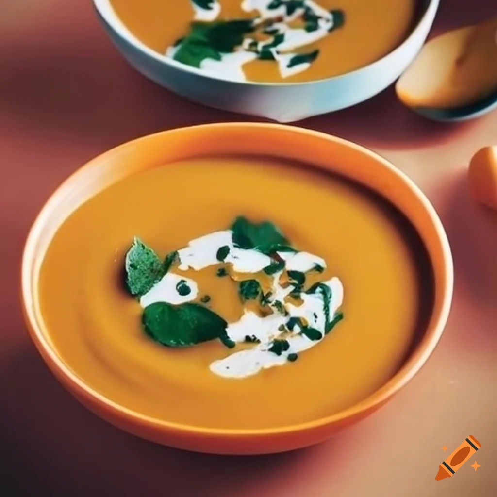

Zupa dyniowa
Składniki:
1 średnia dynia (ok. 1,5 kg), obrana, pokrojona na kawałki
1 duża cebula, posiekana
2 ząbki czosnku, posiekane
1 średnia ziemniak, obrany i pokrojony w kostkę
4 szklanki bulionu warzywnego lub wody
1 łyżeczka startego imbiru (opcjonalnie, dodaje pikantnego smaku)
1/2 łyżeczki mielonego cynamonu
1/4 łyżeczki mielonej gałki muszkatołowej
Sól i pieprz do smaku
2 łyżki oleju roślinnego lub masła
Instrukcje:
W dużym garnku rozgrzej olej lub masło na średnim ogniu. Dodaj posiekaną cebulę i smaż, aż stanie się miękka i szklista, około 5 minut.
Dodaj posiekany czosnek i smaż przez kolejną minutę, aż będzie aromatyczny.
Dodaj pokrojoną dynię i ziemniaka do garnka. Smaż przez kilka minut, mieszając, aby warzywa się zrumieniły.
Wlej bulion warzywny lub wodę do garnka, przykryj i gotuj na wolnym ogniu przez około 20-25 minut, aż dynia i ziemniaki będą miękkie.
Zmiksuj zupę na gładki krem, używając blendera ręcznego lub stacjonarnego.
Dodaj imbir, cynamon, gałkę muszkatołową, sól i pieprz do smaku. Dobrze wymieszaj.
Gotuj jeszcze przez kilka minut, aby wszystkie smaki się połączyły.
Przed podaniem można udekorować zupę śmietaną, pestkami dyni lub świeżymi ziołami.